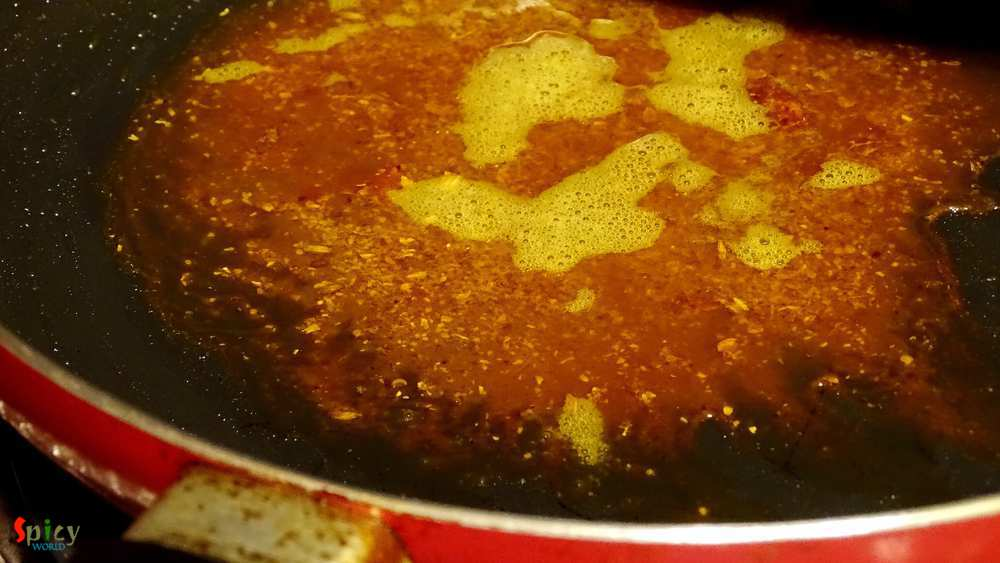
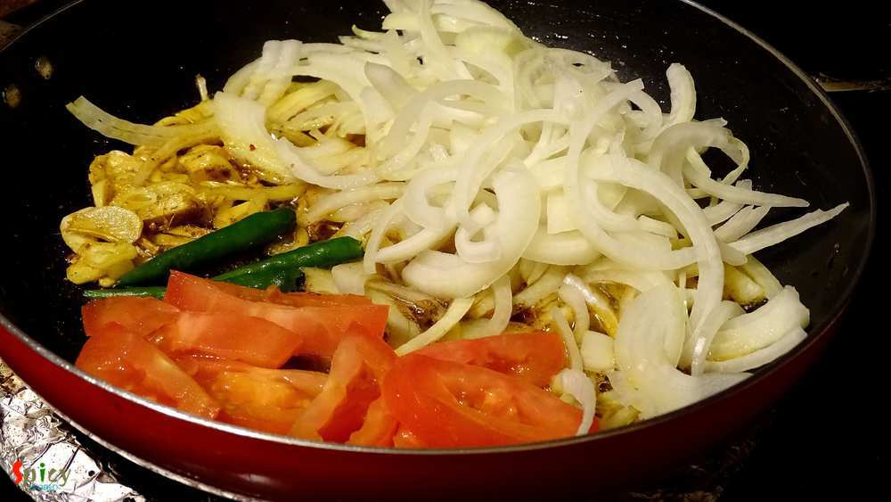
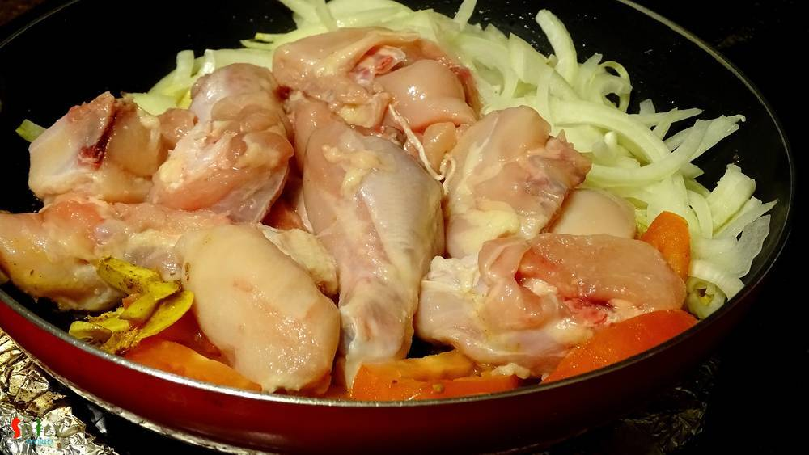

Simple and Easy Recipes
Rustic Chicken Curry / Village style Chicken curry
© 2016 Spicy World, Published on: Apr 5, 2016
I can eat chicken curry in any mood, any day. Chicken was almost regular to our home. My father and I are true chicken lover and that's why my mom used make very plain and simple chicken curry on weekdays. Sometime when she was in hurry, she used to throw everything in a pan and came up with this tasty chicken curry. I also heard that villagers often make this kind of curry which needs no recipe, no attention, but still a winner !

Ingredients
- 1 kg of with bone chicken pieces.
- 1 big onion, sliced.
- 2 cloves of garlic, sliced.
- 1 inch ginger, chopped.
- 4 green chilies.
- 1 small tomato, sliced.
- Salt and sugar.
- Spice powder (1 Teaspoon of turmeric powder, 1 Teaspoon of red chilli powder, Half Teaspoon of roasted cumin powder, Half Teaspoon of coriander powder, 1 Teaspoon of garam masala powder).
- 3 Tablespoons of mustard oil.
- 1 potato, cut into 4.
- Half cup of warm water.

Steps
Heat the oil in a pan.
Now add all the spice powder in the warm oil. Saute for a minute in low flame. Do not burn the powder.
Place onion, ginger, garlic, green chilies and tomato in that spicy oil. Bring the heat to medium.
Add the washed chicken pieces. Give it a good mix on high flame for 5 minutes.
Add enough salt, pinch of sugar and the potatoes. Mix well for another 5 minutes in high flame.
Now cover the pan, bring the heat to low and cook for 15 minutes. Chicken will loose lots of water.
If you need to add water, add a cup of warm water and cook till everything becomes soft.
Your rustic chicken curry is ready ...
Serve this curry hot with some steamed rice or plain roti ..
")